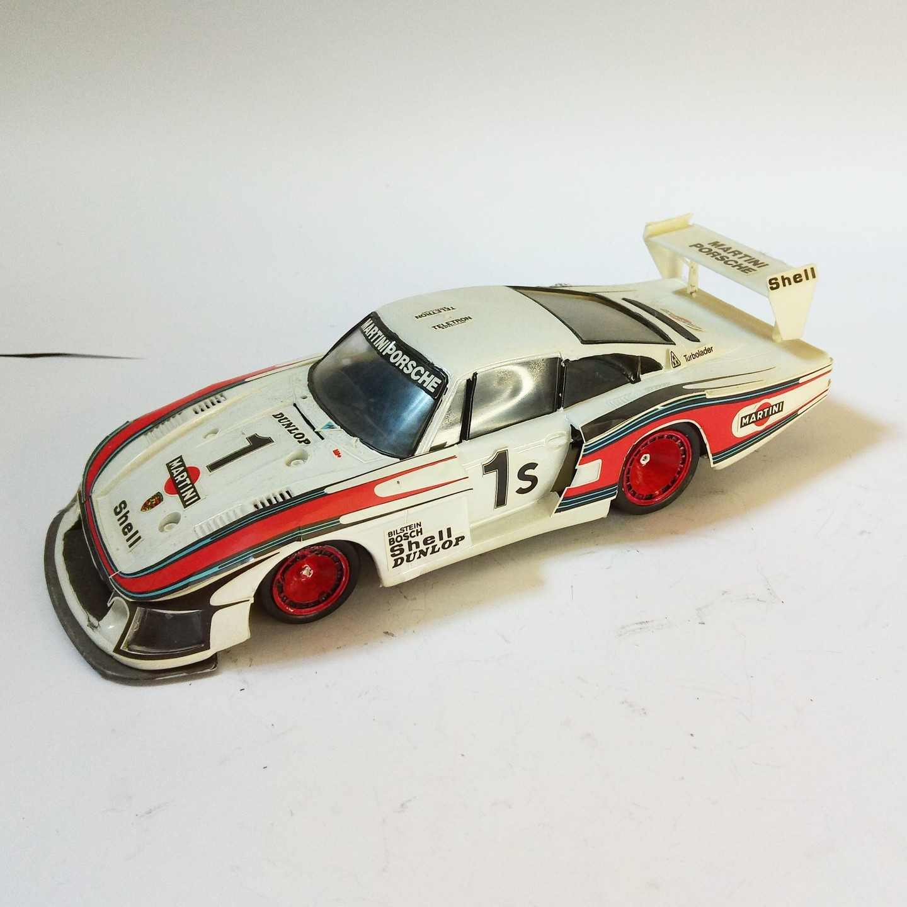

Auto e veicoli stradali · scale model archive
Porsche 935/78
Porsche 935/78 — Kit: TBD, Scale: 1/24. Impressive areodynamic evolution of the Porsche 911 Japanese manufacturer, adhesives instead of decals #1/24

Photo gallery
English description
Impressive areodynamic evolution of the Porsche 911
Japanese manufacturer, adhesives instead of decals
#1/24
Descrizione italiana
Notevole areodynamic evolution del Porsche 911.
giapponese manufacturer, adhesives instead di decals.